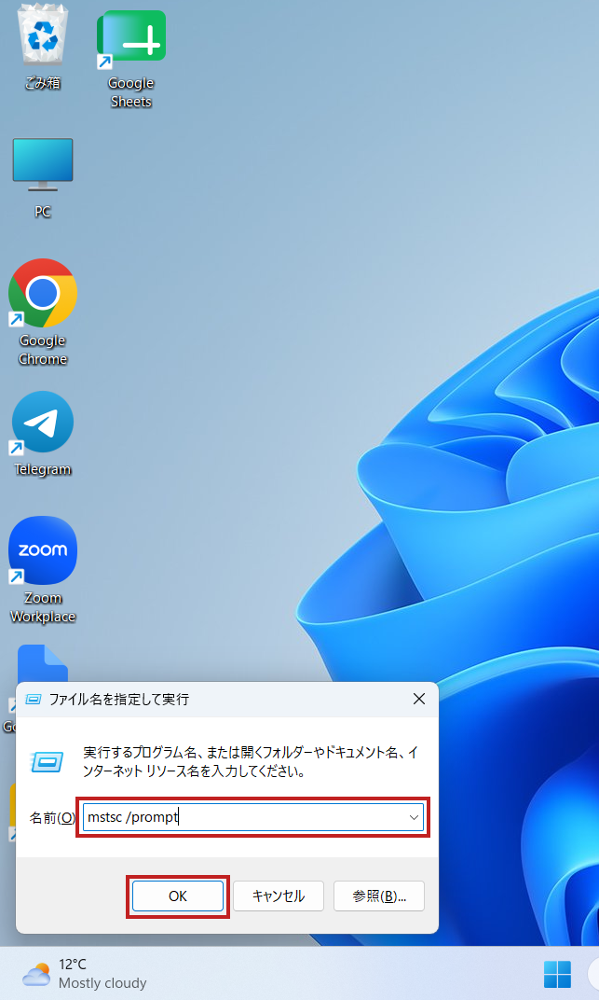

P0 Своя среда и место выполнения команд
Практика P0–P6 · Задания M0–M5
Связанное задание: M0.
Что изучаем
Выбрать нужный сервер в списке EC2, подключиться через Session Manager и проверить результат задания.
Задание
В своей готовой среде проверьте идентификаторы и роли пяти серверов, затем проверьте, к какому серверу и под каким пользователем вы подключились.
Подключение к серверам

Зелёная стрелка ведёт к Web-серверу в P0.2.
Что сделать в Practice0
Проверьте свой AWS-аккаунт, роль каждого сервера и среду выполнения команд.
Пример решения (порядок действий)
P0.1 Проверить instance ID пяти серверов
Среда выполнения:
AWS Console своего студенческого аккаунта
Цель и действия:
Введите EC2 в поле Search в верхней части AWS Console и откройте консоль EC2. Откройте EC2 → Instances и найдите пять серверов своей среды в столбце Name. В той же строке проверьте полный идентификатор с префиксом i- в столбце Instance ID.

Список Instances в EC2. Для P0 выберите строку с окончанием имени -web, для M0 - -db, -dns, -repo и -bastion по очереди.
P0.2 Подключиться к Web-серверу через Session Manager
Среда выполнения:
SSM-терминал Web-сервера: ssm-user
Цель и действия:
Нажмите Instance ID Web-сервера, найденного в P0.1. На странице сведений нажмите стрелку справа от Connect и выберите Connect with SSM Session Manager. В терминале новой вкладки выполняйте команды по одной. Выведите файл /etc/jdu-web/bootstrap.json, созданный при начальной настройке, командой cat и найдите "role": "web". Убедившись, что это Web-сервер, создайте проверочный файл в домашнем каталоге через nano.

Страница EC2. Нажмите стрелку справа от Connect и выберите Connect with SSM Session Manager. На снимке показан Web-сервер.
Команды: нумерация внутри этого шага
# 1. Показать имя пользователя ОС в этом терминале.
id -un
# 2. Перейти в свой домашний каталог.
cd ~
# 3. Показать текущий рабочий каталог.
pwd
# 4. Вывести файл и проверить, что поле role имеет значение web.
cat /etc/jdu-web/bootstrap.json
# 5. Введите только web. Сохраните через Ctrl+O и Enter, выйдите через Ctrl+X.
nano p0-connection.txt
# 6. Прочитать p0-connection.txt без изменения.
cat p0-connection.txt
Ожидаемый результат и его смысл:
Команда id -un выводит ssm-user, а pwd - /home/ssm-user. В JSON-файле есть "role": "web", а последняя команда cat выводит только строку web.
P0.3 Открыть рабочий стол бастиона по RDP
Среда выполнения:
Windows PC студента (общая учётная запись)
Цель и действия:
Откройте рабочий стол своего бастиона через приложение Windows «Подключение к удалённому рабочему столу».
1. Выберите бастион
Откройте EC2 → Instances, найдите в своей учебной среде строку с окончанием имени -bastion и нажмите Instance ID в этой строке.

2. Скопируйте публичный IPv4-адрес
На странице экземпляра нажмите значок копирования рядом с Public IPv4 address. На следующем шаге используйте текущий адрес из своей консоли. Адрес на снимке приведён для примера.


Нажмите Windows+R, чтобы открыть окно «Выполнить». Введите mstsc /prompt в поле «Открыть» и нажмите OK.
Команды: нумерация внутри этого шага
# 1. Открыть RDP Windows с запросом учётных данных.
mstsc /prompt
3. Введите публичный IPv4-адрес и подключитесь
В окне «Подключение к удалённому рабочему столу» вставьте скопированный на шаге 2 публичный IPv4-адрес в поле Компьютер и нажмите Подключить.

4. Проверьте предупреждение о сертификате
Если появилось это окно, сверьте адрес назначения с публичным IPv4 из шага 2. Нажмите Да, когда преподаватель подтвердит, что это ваш бастион и сертификат учебной среды. Если подтвердить это не удалось, нажмите Нет и обратитесь к преподавателю.

5. Войдите на бастион
В окне входа xrdp проверьте, что в поле Session выбрано Xorg. Введите labuser в поле username, свой пароль RDP из начальной настройки в поле password и нажмите OK.

6. Убедитесь, что рабочий стол открылся
Если в окне удалённого рабочего стола видно меню Applications слева вверху и значок Home, вы подключены к бастиону.

Смысл команд и настроек:
RDP передаёт экран и ввод бастиона. Запрос Firefox внутри RDP идёт от бастиона, а не Windows. Раскладка клавиатуры влияет на символы пароля; язык интерфейса и раскладка - разные настройки.
Ожидаемый результат и его смысл:
Откроется рабочий стол Ubuntu (Xfce) бастиона. Чтобы открыть Firefox и другие программы, используйте меню Applications.
Если не получилось:
При Login failed проверьте имя и раскладку клавиатуры. Не отправляйте пароль в чат. При недоступности сверьте текущий IP и разрешённый CIDR с преподавателем; не открывайте 3389 для всех. Перед закрытием RDP сохраните работу.
Проверка и сдача
Откройте адрес портала из объявления преподавателя в браузере на своём компьютере и войдите с учебным аккаунтом Google. При первом входе выберите регистрацию своей среды AWS и следуйте указаниям на экране.
В строке P0 нажмите Проверить это задание. Посмотрите результат на этой же странице и убедитесь, что в строке P0 сохранён 1 / 1.